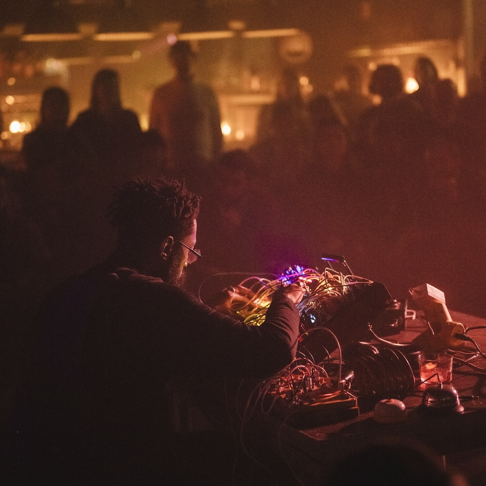

sadnoise
Sadnoise is astral internet data ambiance esoterica now
Sadnoise is embedded ninth ritual practice of performance, discussing the cybernetics of sonic acts and architecture as a lens into impossible infrastructures for design. It is in conversation with the performer and audience, the sound and the surround. Sadnoise lives in environments as nonlinear moments in time. It is an abstract representation of the esotericism of Internet and binary codes bed within dying grass and mossy floors. Sadnoise lives online as a flowing faucet, with homages to breath, air, birds and the ground. Sadnoise gives thanks to and acknowledges indigenous land, traditions and philosophy, as well as the ground beneath our feet.
More
Places you can hear my sounds:
Aliases:- sadnoisei listen!
- wetness listen!
- XLR sex (Adrian Ocone + Femi Shonuga) listen!
- Triplets (Mark Cetilia + Femi Shonuga) listen!
- Sadwarbler (Cryptwarblr + Sadnoise) listen!
- Kouruga (Femi Shonuga + Mackenzie Kourie) listen!
- Oreoreoreo [FKA Oreo Cookie Therapy] (Femi Shonuga and HuiChun Yang) listen!
- GAINS (Femi Shonuga-Fleming & Jake Sokolov-Gonzalez) listen!
